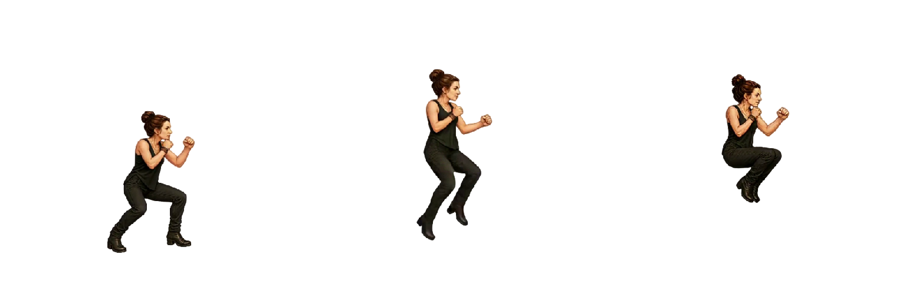
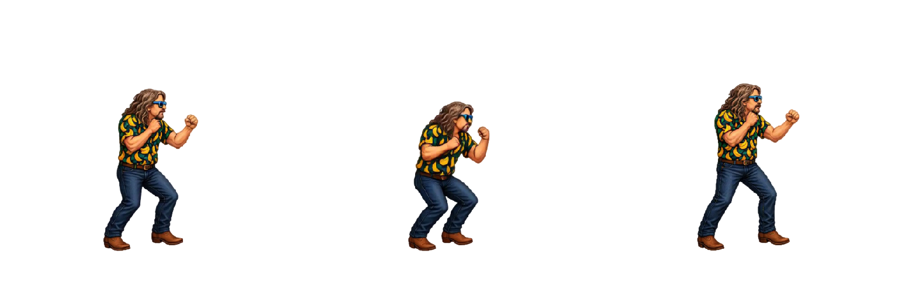
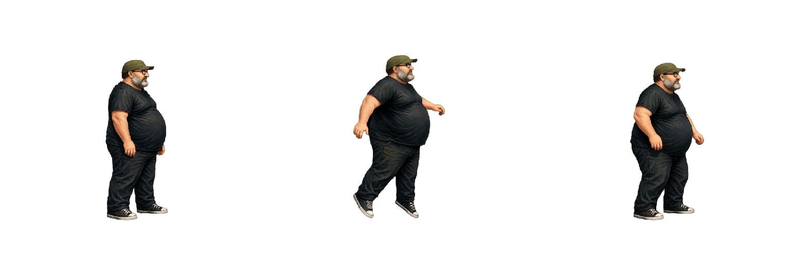
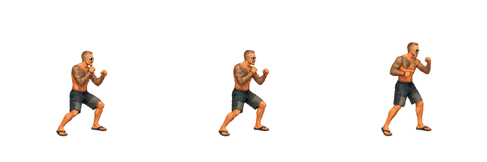
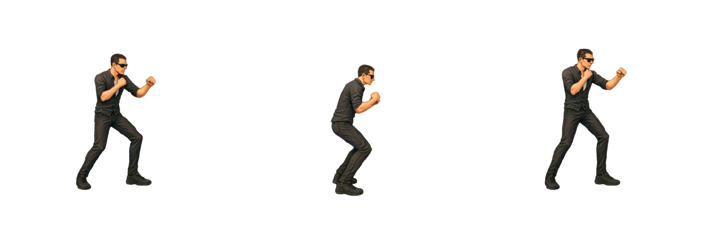
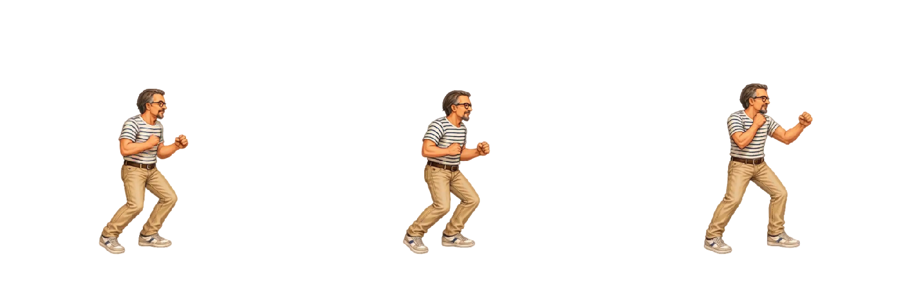
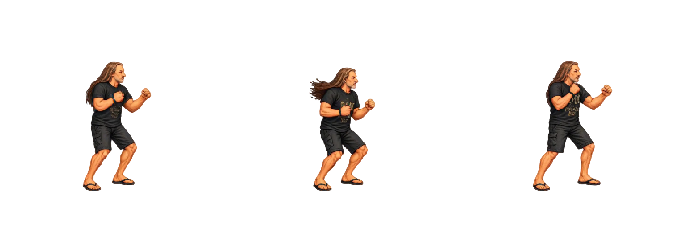

Salto indietro
Disponibile per 7 personaggi, in base alle animazioni realmente definite in Godot. Nessuna variante mancante viene inventata.
Attacchi light: estensione 300 ms, durata 500 ms; medium: 450 / 750 ms; heavy: 500 / 1000 ms. La sequenza originale e i recuperi separati definiti in Godot sono conservati. Una posa terminale uguale alla prima chiude il ciclo senza aggiungere durata: in piedi, accovacciata o in aria secondo la mossa. Non simula il movimento fisico del salto.
Le mosse senza categoria mantengono durate e pesi Godot; la rialzata da accovacciata dura 250 ms come l’accovacciata. Loop attivo di default, disattivabile. Le proporzioni in centimetri e le correzioni Godot restano condivise con gli altri player.
Scarica CSV · Configurazione timing · Inventario
| Personaggio | Ingresso / estensione o centro / fine | Frame | Durata | Estensione | FPS Godot | Note |
|---|---|---|---|---|---|---|
| Arianna |  | 22 | 458.333 ms | Timing sorgente | 48 | Sequenza Godot, senza imporre un punto di estensione. |
| Bue |  | 20 | 833.333 ms | Timing sorgente | 24 | Sequenza Godot, senza imporre un punto di estensione. |
| Mangler |  | 25 | 788.095 ms | Timing sorgente | 48 | Sequenza Godot, senza imporre un punto di estensione. Scala Godot [0.7, 0.7]. |
| Mileto |  | 20 | 833.333 ms | Timing sorgente | 24 | Sequenza Godot, senza imporre un punto di estensione. |
| Oscare |  | 20 | 833.333 ms | Timing sorgente | 24 | Sequenza Godot, senza imporre un punto di estensione. |
| Peirò |  | 20 | 833.333 ms | Timing sorgente | 24 | Sequenza Godot, senza imporre un punto di estensione. |
| Torpe |  | 20 | 833.333 ms | Timing sorgente | 24 | Sequenza Godot, senza imporre un punto di estensione. |